PRÁCTICA 04: "CONVOLUCIÓN Y CORRELACIÓN DE SEÑALES EN TIEMPO CONTINUO"
INTEGRANTES:
- Basilio Pérez Neftali
- Orozco Segovia Mikhael Imanol
- Servin Zamora Alejandro
Contents
OBJETIVOS:
- Conocer métodos básicos de integración numérica
- Manipulación de instrucciones en MATLAB
- Simular convoluciones y correlaciones de señales continuas
INTRODUCCIÓN:
Existen varios métodos para la solución númerica de integrales, se deja un reporte de algunos de ellos en el siguiente
DESARROLLO:
PUNTO #1
Realizar la convolución de:
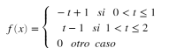
con la señal:
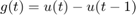
El resultado analítico siguiente se obtuvo previamente en el problema 1 del PR04:

clear all syms t f= @(t) (-t+1).*(t>=0 & t<1) + (t-1).*(t>=1 & t<=2); g = @(t) heaviside(t)-heaviside(t-1); figure (3) subplot(3,1,1) fplot(f,[-1,3],'r') grid on title('f(t)') % ax=gca; ax.XAxisLocation = 'origin'; ax.YAxisLocation = 'origin'; % axis([-1 3 -.20 1.20]); subplot(3,1,2) fplot(g,[-0.25,1.25],'g') grid on title('g(t)') % ax=gca; ax.XAxisLocation = 'origin'; ax.YAxisLocation = 'origin'; % axis([-1 1.5 -.20 1.2]); t1=0:0.01:1; t2=1:0.01:2; t3=2:0.01:3; subplot(3,1,3) plot(t1,-(t1.^2/2)+t1) hold on plot(t2,(t2.^2)-3.*t2+5/2) plot(t3,-(t3.^2)/2+2.*t3-3/2) grid on title('f(t)*g(t)=h(t)') % ax=gca; ax.XAxisLocation = 'origin'; ax.YAxisLocation = 'origin'; % axis([-.50 3.6 -.25 .75]); % % Si ejecutamos las siguientes instrucciones en el Command Window y el directorio de trabajo es el mismo donde se encuentra la función convconm tendrémos el siguiente resultado f= @(t) (-t+1).*(t>=0 & t<1) + (t-1).*(t>=1 & t<=2); g = @(t) heaviside(t)-heaviside(t-1); convconm(f,g) %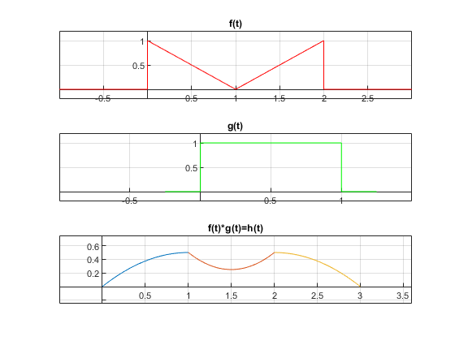 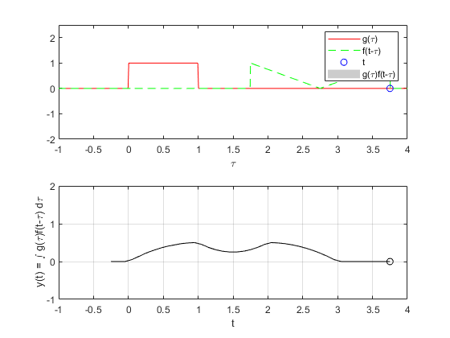
A continuación se muestra la convolución graficamente :

PUNTO #2
Realizar la convolución de:


El resultado analítico siguiente se obtuvo previamente en el problema 3 del PR04:

Codigo en Matlab x = @(t) (t).*(t>=0 & t<=1) + (1).*(t>1 & t<=2); h = @(t) (1).*(t>=1 & t<=3); convconm(x,h)

PUNTO #3
De la PR06 inciso E) nos pide la autocorrelación de:
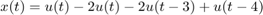
El resultado analitico obtenido es:

clear all figure (1) x=@(t)heaviside(-t)-2*heaviside(-t-3)+heaviside(-t-4); subplot(3,1,1) fplot(x,[-5,1],'b') grid on title('x(t)') ax=gca; ax.XAxisLocation = 'origin'; ax.YAxisLocation = 'origin'; axis([-5 1 -1.5 2]); % h=@(t)heaviside(t)-2*heaviside(t-3)+heaviside(t-4); subplot(3,1,2) fplot(h,[-1,5],'r') grid on title('h(t)') ax=gca; ax.XAxisLocation = 'origin'; ax.YAxisLocation = 'origin'; axis([-1 5 -1.5 2]); % t1=-4:01:-3; t2=-3:01:-2; t3=-2:01:-1; t4=-1:01:0; t5=0:01:1; t6=1:01:3; t7=3:01:4; subplot(3,1,3) plot(t1,-t1-4); hold on plot(t2,t2+2); hold on plot(t3,t3+2); hold on plot(t4,3*(t4)+4); hold on plot(t5,-3*(t5)+4); hold on plot(t6,-t6+2); hold on plot(t7,t7-4); grid on title('x(t)*h(t)') % ax=gca; ax.XAxisLocation = 'origin'; ax.YAxisLocation = 'origin';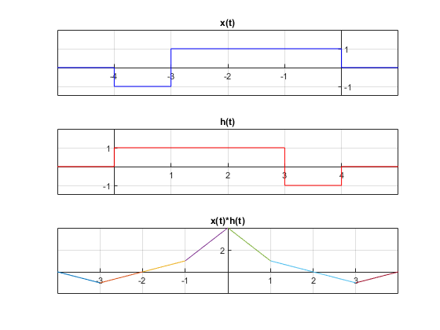
Al ejecutar:
x=@(t)heaviside(-t)-2*heaviside(-t-3)+heaviside(-t-4); h=@(t)heaviside(t)-2*heaviside(t-3)+heaviside(t-4); convconm34(x,h)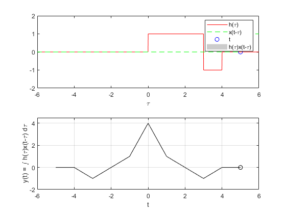
OBTENEMOS:
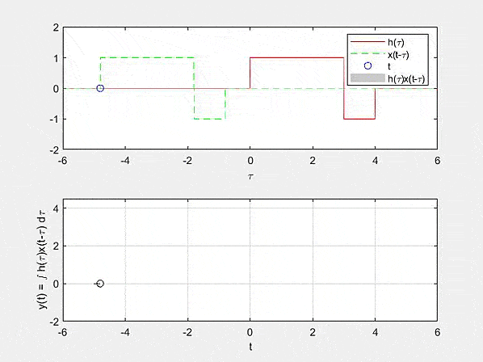
PUNTO #4
De la PR06 inciso F) nos pide la correlación de:
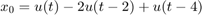
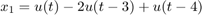
El resultado analitico obtenido es:

clear all figure (2) x=@(t)heaviside(-t)-2*heaviside(-t-3)+heaviside(-t-4); subplot(3,1,1) fplot(x,[-5,1],'b') grid on title('x(t)') ax=gca; ax.XAxisLocation = 'origin'; ax.YAxisLocation = 'origin'; axis([-5 1 -1.5 2]); % h=@(t)heaviside(t)-2*heaviside(t-2)+heaviside(t-4); subplot(3,1,2) fplot(h,[-1,5],'r') grid on title('h(t)') ax=gca; ax.XAxisLocation = 'origin'; ax.YAxisLocation = 'origin'; axis([-1 5 -1.5 2]); % t1=-4:01:-3; t2=-3:01:-2; t3=-2:01:-1; t4=-1:01:0; t5=0:01:1; t6=1:01:2; t7=2:01:4; subplot(3,1,3) plot(t1,-t1-4) hold on plot(t2,t2+2) hold on plot(t3,3*(t3)+6) hold on plot(t4,-t4+2); hold on plot(t5,-3*(t5)+2) hold on plot(t6,-t6) hold on plot(t7,t7-4) hold on title('x(t)*h(t)') ax=gca; ax.XAxisLocation = 'origin'; ax.YAxisLocation = 'origin';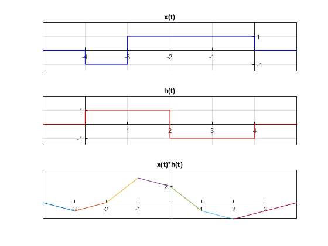
Al ejecutar:
x=@(t)heaviside(-t)-2*heaviside(-t-3)+heaviside(-t-4); h=@(t)heaviside(t)-2*heaviside(t-2)+heaviside(t-4); convconm34(x,h)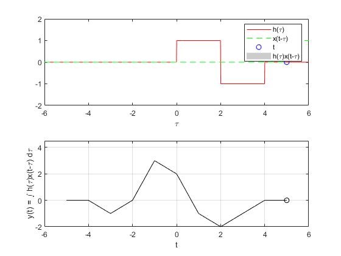
OBTENEMOS: